Deployment Overview
This guide demonstrates how to integrate a WatchGuard Wi-Fi Cloud Captive Portal with SecureW2 authentication for users to authenticate, and receive certificates, for WPA2 Enterprise EAP-TLS Wi-Fi access, and an HTTPS proxy certificate deployed for HTTPS content inspection on a WatchGuard Firebox. WPA2 Enterprise EAP-TLS wireless communication is secured by a certificate pair that requires no password, and the client certificate is unique to the client.
Integration Summary
These tools are used to secure wireless communication and HTTPS Proxy traffic:
- SecureW2:
- SecureW2 JoinNow MultiOS Management Portal
- WatchGuard:
- WatchGuard AP420
- WatchGuard Wi-Fi Cloud Account
- WatchGuard Firebox
- Microsoft Server 2016
- Active Directory
- Certificate Services
Test Topology
SecureW2 JoinNow MultiOS Management Portal interacts with the WatchGuard AP420 through policies to push certificates to end users.

SecureW2 Network Profile, Redirect URL, and RADIUS
Use the Device Onboarding section in the SecureW2 console to acquire the RADIUS information and portal redirect URL.
- Open the SecureW2 JoinNow MultiOS Management Portal and select Device Onboarding > Getting started.
- In the Quickstart Network Profile Generator section, from the Profile Type drop-down list, select Wireless.
- From the Profile Type drop-down list, select Wireless.
- In the SSID text box, type the SSID for the network to be secured by TLS.
- From the Security Type drop-down list, select WPA2-Enterprise.
- From the EAP Method drop-down list, select EAP-TLS.
- From the Policy drop-down list, select Default.
- Click Create. The Network Profiles page appears.
- In the Functions column, click View, and copy the URL. This is the Redirect Portal URL for deployment in WatchGuard Wi-Fi Cloud.
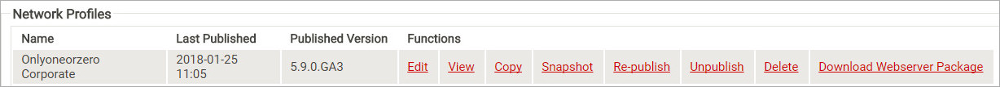
- Return to the SecureW2 JoinNow MultiOS Management Portal and select AAA Management > AAA configuration.
- Note the RADIUS Port, Primary and Secondary IP Address, and the Shared Secret.
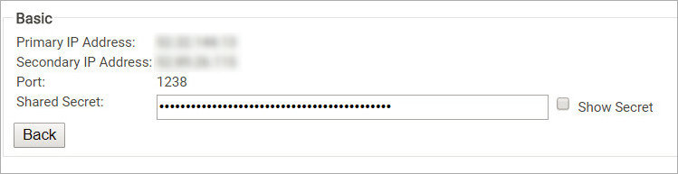
WatchGuard Wi-Fi Cloud Basic Configuration
For detailed information on WatchGuard Wi-Fi Cloud AP deployment, see the Getting Started Guide.
These instructions use Manage for the Wi-Fi Cloud configuration. You can now also perform these configuration steps with the Discover application. For more information, see About Discover.
Configure WatchGuard Wi-Fi Cloud with the SecureW2 RADIUS Information for EAP-TLS
- Log in to your WatchGuard account.
- Select My WatchGuard > Managed Wi-Fi Cloud > Manage.
- Select Configuration > Device Configuration > RADIUS Profiles.
- On the RADIUS Profiles tab, click Add RADIUS Profile.
- In the Profile Name text box, type a friendly description for the profile.
- In the IP Address text box, type the Primary IP address of the RADIUS server from SecureW2. This IP address requires outbound access in your firewall rules. This is open in the default outgoing policy.
- In the Authentication Port text box, type the port number listed for the RADIUS server from SecureW2. This port requires outbound access in your firewall rules. This is open in the default outgoing policy.
- Leave the Accounting Port, in the default setting.
- In the Shared secret text box, type the shared secret from the SecureW2 RADIUS server.
- Click Save.
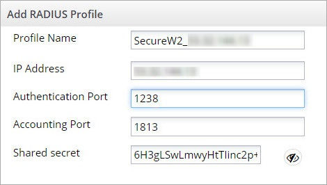
- Repeat these steps for the second SecureW2 RADIUS server.
Configure WatchGuard Wi-Fi Cloud with the SSID Profile for EAP-TLS
- In WatchGuard Wi-Fi Cloud, open Manage.
- Select Configuration > Device Configuration > SSID Profiles.
- Select Add New Wi-Fi Profile.
- Type the Profile Name and SSID name for secure EAP-TLS client connections.
- Expand the Security section, from the Security Mode drop-down list select WPA2 and select 802.1X.
- From the RADIUS Authentication drop-down list, select the two configured RADIUS servers.
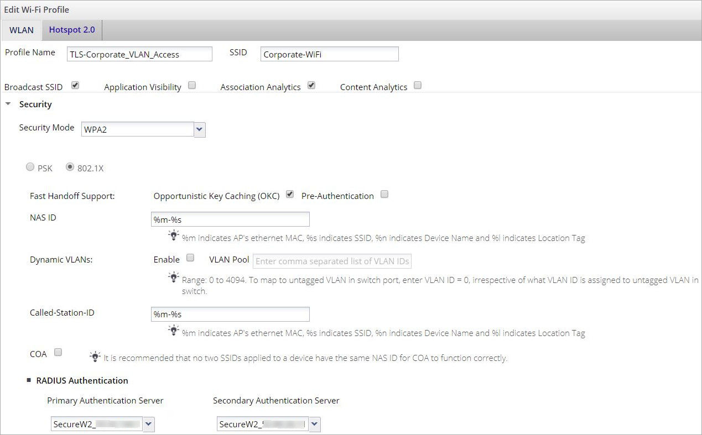
- Expand the Network section and set the VLAN ID to 30. You will use this VLAN ID in your firewall configuration.
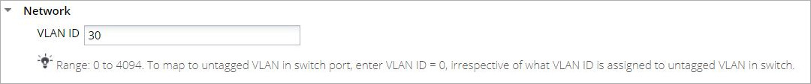
- Click Save.
Configure WatchGuard Wi-Fi Cloud with the SSID Profile for Splash Page Redirection
- In WatchGuard Wi-Fi Cloud, open Manage.
- Select Configuration > Device Configuration > SSID Profiles.
- Select Add New Wi-Fi Profile.
- Type the Profile Name and SSID name for client connections.
- Expand the Security section and verify the Security Mode is set to Open.
- Expand the Network section and set the VLAN ID to 20. This VLAN ID is used in your firewall configuration.
- Expand the Captive Portal section and select Enable Captive Portal.
- Select External Splash Page for Sign-in/Click-through.
- In the Splash Page URL text box, type the View URL from the SecureW2 configuration.
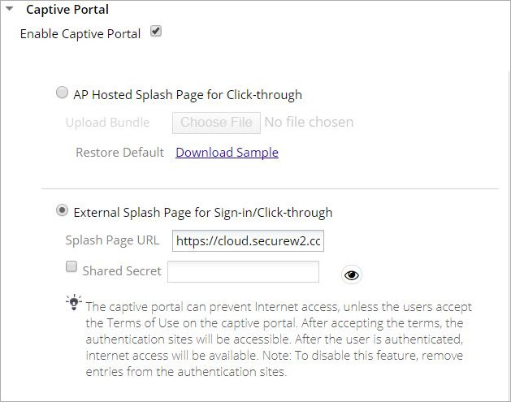
- To configure the Walled Garden Sites, click Add and add these four SecureW2 URLs:
- cloud.securew2.com
- service.securew2.com
- pki-services.securew2.com
- auth.securew2.com
- Click OK when finished.
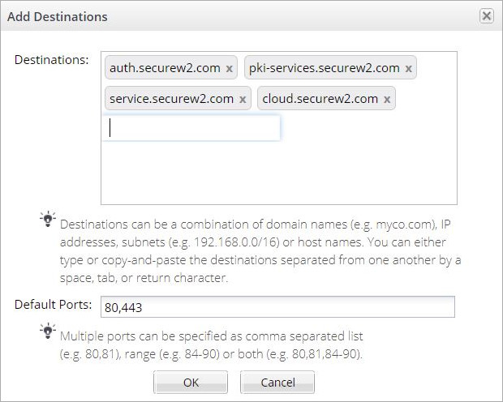
- Add other Walled Garden Sites as required by your operating systems to provide access to their respective App Store or prevent certificate issues.
| Operating System | Walled Garden Sites | |
|---|---|---|
| Mac |
*.akamaiedge.net *.akamaitechnologies.com *.apple.com *.apple.com.edgekey.net apple.com captive.apple.com gsp1.apple.com |
airport.us appleiphonecell.com ibook.info itools.info thinkdifferent.us apple.com/library/test/success.html |
| Windows |
urs.microsoft.com urs.smartscreen.microsoft.com
|
|
| Android |
*.play.google.com *.store.google.com android.clients.google.com lh3.googleusercontent.com lh6.ggpht.com lh5.ggpht.com lh4.ggpht.com |
lh6.googleusercontent.com lh3.ggpht.com googleapis.com google-analytics.com cache.google.com 172.217.0.0/16 216.58.192.0/19 74.125.0.0/16 |
| Kindle |
54.224.0.0/12 72.21.192.0/19 176.32.96.0 - 176.32.103.255 207.171.160.0/19 |
|
- Expand Captive Portal, and on the right, in the Redirect URLtext field, type the URL to which to send users after they access the portal.
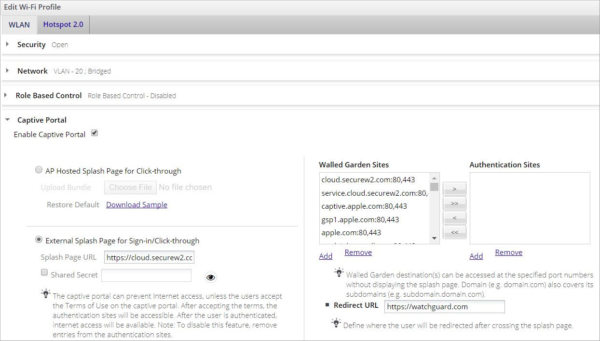
-
Click Save.
Configure the WatchGuard Firebox for SecureW2 Access to Active Directory
SecureW2 connects to Active Directory at the public IP address 52.41.166.6. This connection uses port 636 for secure access. Active Directory and Certificate Services are required on Windows Server 2016.
- Log in to your WatchGuard Firebox.
- From Fireware Web UI, select Firewall > SNAT > Add.
- Type a Name and Description for the SNAT.
- Under SNAT Members, click Add.
- From the External/Optional IP Address drop-down list, select Any-External, External, or an IP address that is public facing.
- Set the Internal IP Address to the private address of the Active Directory server.
- Click OK and Save.
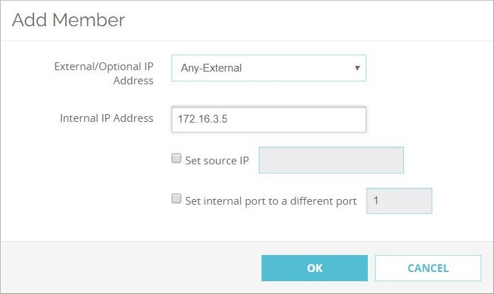
- Select Firewall > Firewall Policies > Add Policy.
- Select Custom. Click Add.
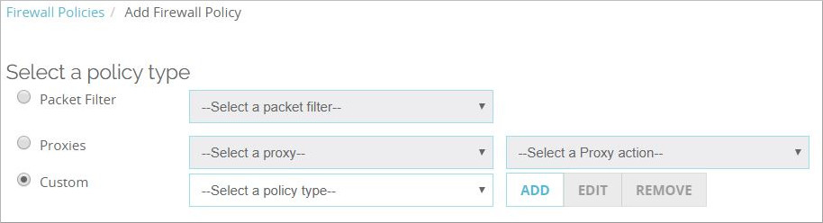
- Type a Name, Description, and add TCP port 636.
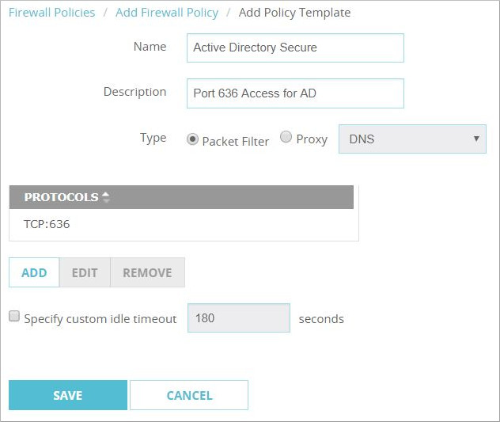
- Click Save.
- You are redirected to the Select a policy type page with your new custom policy selected in the drop-down list. Click Add Policy to continue with the policy creation.
- In the From field, remove Any-Trusted. Click Add.
- From the Member type drop-down list, select Host IPv4.
- Type the SecureW2 public IP address of 52.41.166.6. Click OK.
- In the To field, remove Any-External. Click Add.
- From the Member type drop-down list, select Static NAT.
- Select the SNAT you created in an earlier step. Click OK.
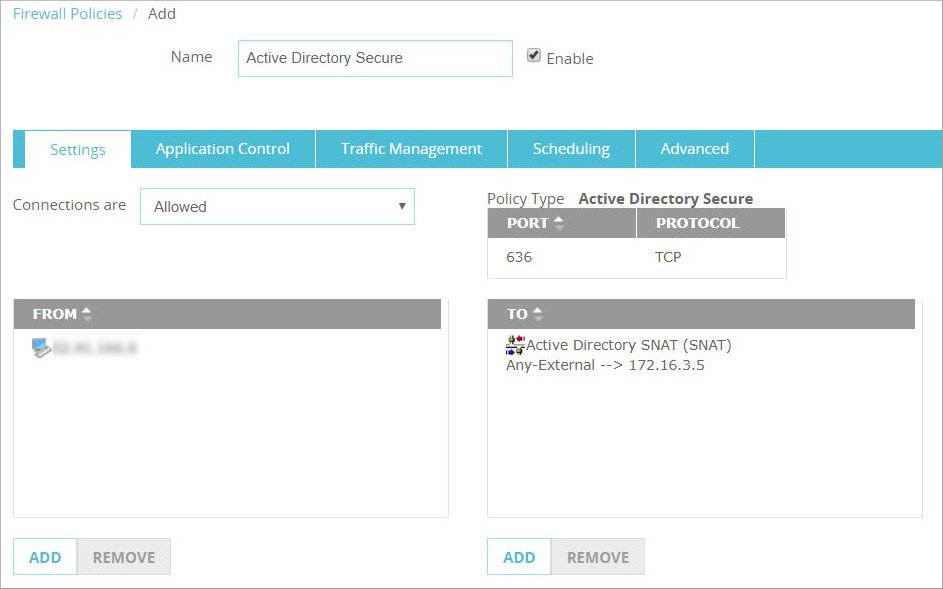
- Confirm the configuration. Click Save.
Configure the WatchGuard Firebox with the Access Point VLANs
- Log in to your WatchGuard Firebox.
- From Fireware Web UI, select Network > Interfaces.
- Select the interface, click Edit.
- Type an Interface Name (Alias) and Interface Description.
- From the Interface Type drop-down list, select VLAN.
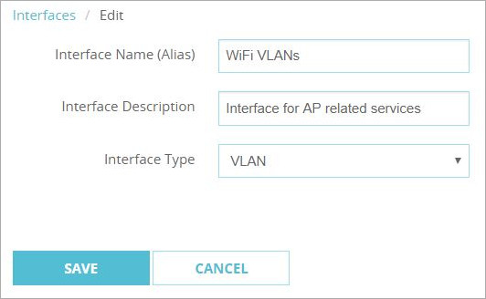
- Click Save.
- Select Network > VLAN.
- Click Add.
- Type a Name, Description, VLAN ID of 10, Security Zone, and an IP Address for the interface.
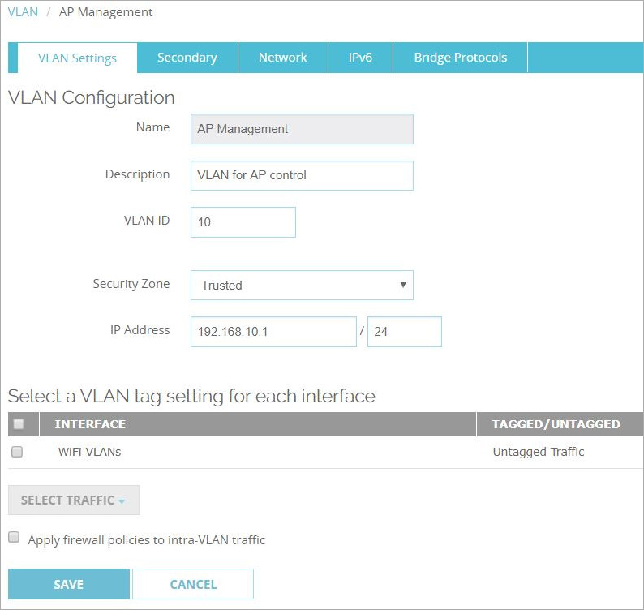
- Select the desired VLAN interface and from the Select Traffic drop-down list, select Untagged Traffic.
This configuration employs a direct connection to the firewall for the access point. Untagged VLAN management for the access point can also be deployed on a switch.
- Click Save.
- Select Network > VLAN.
- Click Add.
- Use VLAN ID 20 and type the configuration for the On-Boarding VLAN.
- Set the VLAN tagging to Tagged Traffic.
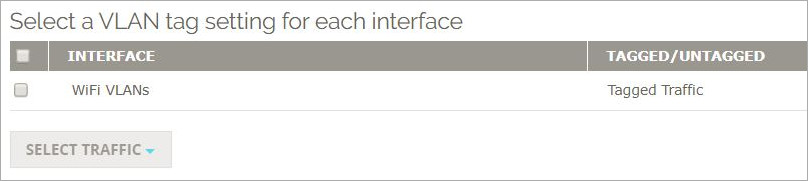
- Click Save.
- Repeat the procedure for tagged traffic on a EAP-TLS VLAN.
- The final VLAN configuration should appear as shown here:
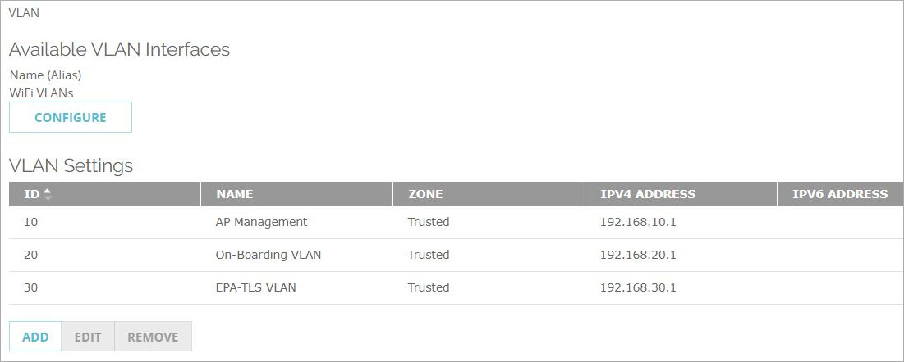
Configure the WatchGuard Firebox Policies for Access Point VLANs
- Log in to your WatchGuard Firebox.
- From Fireware Web UI, select Firewall > Firewall Policies.
- Click Add Policy.
- Select Packet Filter and from the drop-down, select the Any.
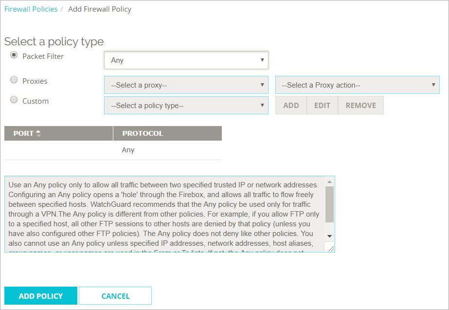
- Click Add Policy.
- In the From field, remove the Any-Trusted alias.
- In the From field, click Add.
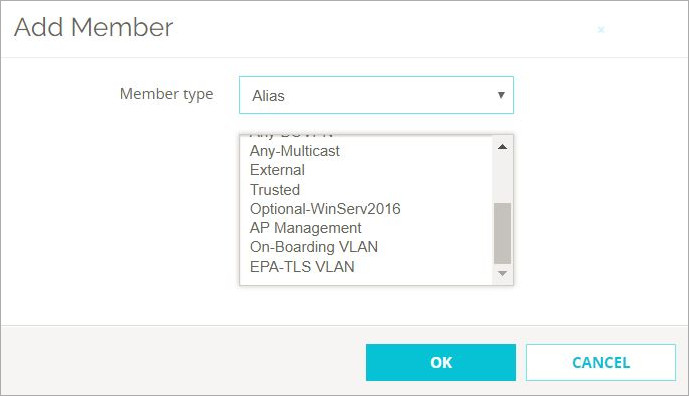
- Select the AP Management VLAN. Click OK.
- Repeat the steps to add the On-Boarding VLAN.
- Change the Name of the policy. Click Save.
- Select Firewall > Firewall Policies. Click Add Policy.
- Select Proxies. From the drop-down list select HTTPS-Proxy.
- From the -- Select a Proxy action -- drop-down list, select HTTPS-Client Standard.
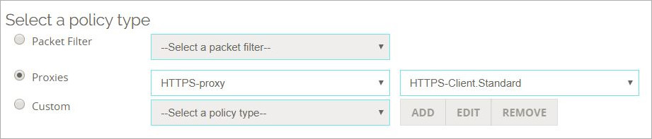
- Click Add Policy.
- Type a new Name for the HTTPS-Proxy policy.
- In the From field, remove the Any-Trusted alias.
- In the From field, click Add.
- In the Add Member page, from the Member type drop-down list, select Alias.
- From the list, select the interface alias. Click OK.
- Select the Proxy Action tab.
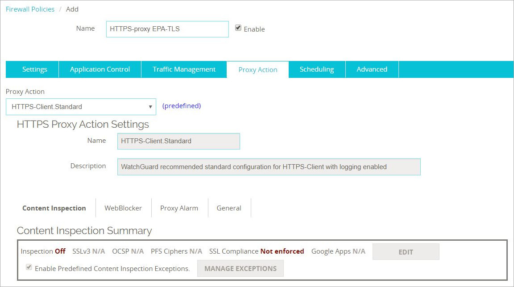
- From the Proxy Action drop-down list, select Clone the current proxy action.
- In the Content Inspection Summary, click Edit.
- Select the option for Enable Content Inspection.
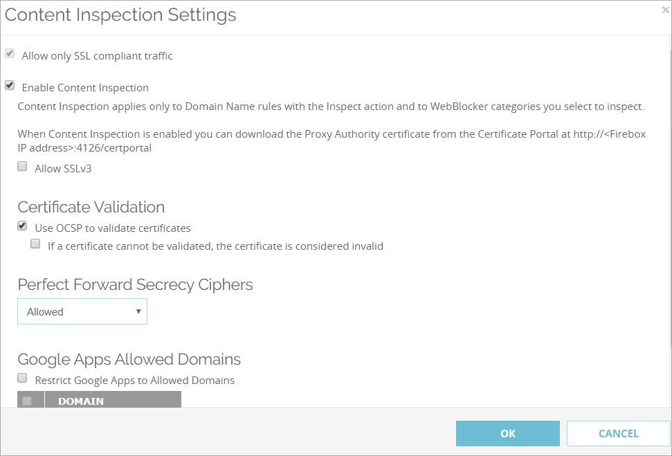
- Click OK.
- Click Save to save the policy.
Retrieve the HTTPS-Proxy Certificate from the WatchGuard Firebox
For more detailed information about content inspection for the HTTPS Proxy, see HTTPS-Proxy: Content Inspection.
- Log in to your WatchGuard Firebox.
- From Fireware Web UI, select System > Certificates.
- Highlight the Proxy Authority certificate from the list. Click Export.
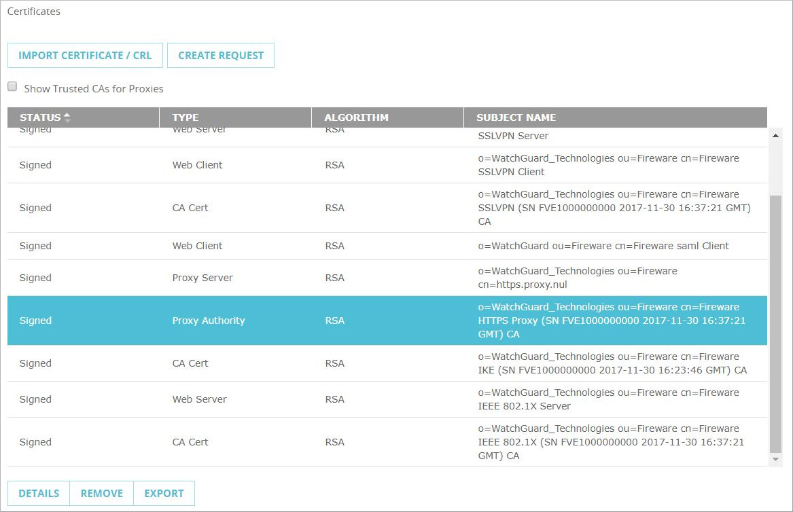
- Browse to the location where you want save the certificate. Click Save.
Retrieve the Certificate for Active Directory Communication
- From Windows 2016 Server, open the Certificate Authority application. Or, right-click Start > Run. Type certsrv.msc in the dialog box. Click OK.
- Right-click the domain in the Certificate Authority (Local) section and select Properties.
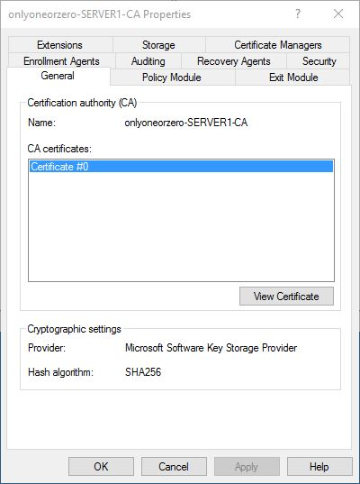
- Click View Certificate.
- Select the Details tab.
- Click Copy to File...
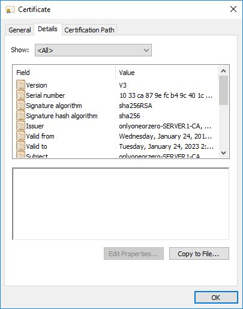
- The Certificate Export Wizard appears. Click Next.
- Select DER encoded binary X.509 (.CER). Click Next.
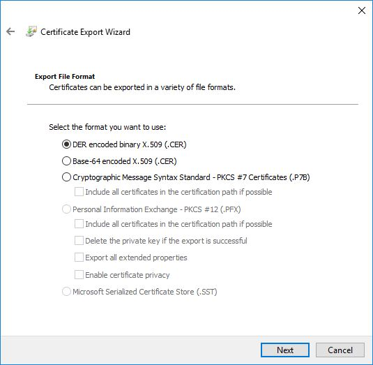
- Provide a File name, browse to a location, and click Save.
- Click Next.
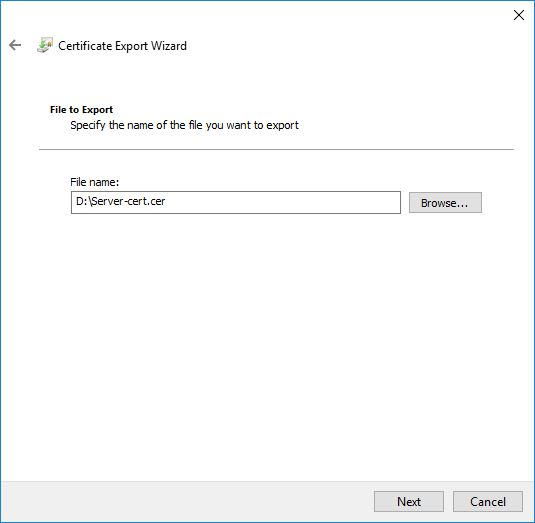
- Click Finish.
Create a Wi-Fi Authentication Group in Active Directory
A Security Group is created in the Active Directory to attach the user to — SecureW2 Authentication Policies, User Role Policies, and Enrollment Policies.
- From Windows Server 2016, open Server Manager.
- Select Tools > Active Directory Users and Computers.
- Right-click the domain and select New > Group.
- In the Group nametext box, type the name of the security group associated with users.
- In the Group name (pre-Windows 2000)text box, type the same name if it is not already pre-populated.
- In the Group scopesection, select Global .
- In the Group type section, select Security.
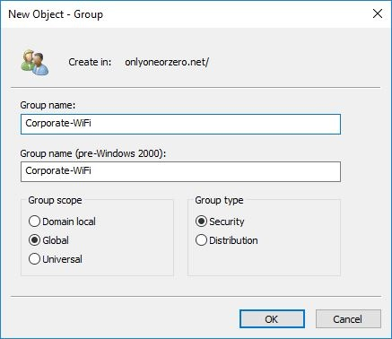
- Click OK.
- Double-click the name of the new security group created.
- Select the Members tab.
- Click Add.
- Type the full name of each user. Select Check Names to verify and click OK to submit.
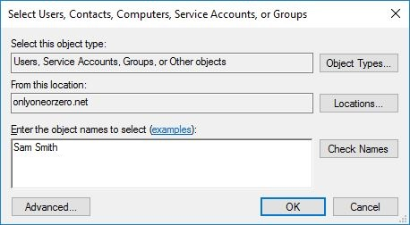
- Click OK.
Configure SecureW2 for Active Directory Queries
Communication to Active Directory is encrypted with the certificate retrieved from the server on port 636 through the restrictive policy created on the WatchGuard Firebox.
- From the SecureW2 Management Portal, select Identity Management > Identity Providers.
- Click Add Identity Provider.
- Type a Name and Description.
- From the Type drop-down list, select LDAP.
- Click Save.
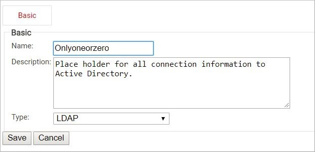
- In the Subject Name Attribute text box:
- sAMAccountName is used if you deploy a simple user name login.
- userPrincipalName is used for the format username@example.com.
- In the Group Map Attribute text box, type memberOf.
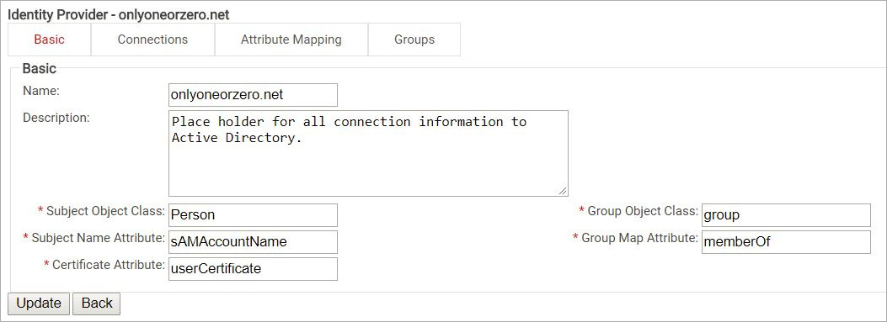
- Select the Connections tab.
- Click Add Connection.
- Type the connection information for your Active Directory connection.
- In the Name text box, type the name of the IDP connection.
- In the Descriptiontext box, describe the IDP connection.
- In the Hostname text box type the hostname that resilves to a public IP Address. This must match the configured name of the server and the issuer listed in the certificate.
- In the Port text box, set to port number to 389, if the connection is unsecured. If the connection is secured with the certificate, set the port number to 636. Select the use TLS/SSL check box to change the value to 636.
- To add a Certificate, click Choose File and upload the self-signed certificate you obtained for use in LDAP communication over SSL.
- Select Anonymous/Admin to specify whether the connection type is anonymous or Administrator. For the anonymous connection, no information is retrieved from Active Directory while testing the connection.
- Or select Admin DN. This parameter is enabled only if you have selected the connection type as admin. Use the distinguished name format. For example: CN=Administrator, CN=users, DC=example, DC=com.
- In the Admin Password text box, type the password of the administrator. This is enabled only if you have select the Admin connection type.
- To retrieve and select a Subject Base DN from the Active Directory, click Naming Context.
- To retrieve and select a Group Base DN from the Active Directory, click Naming Context.
- Set the Server Timeout in seconds for the Active Directory query to timeout.
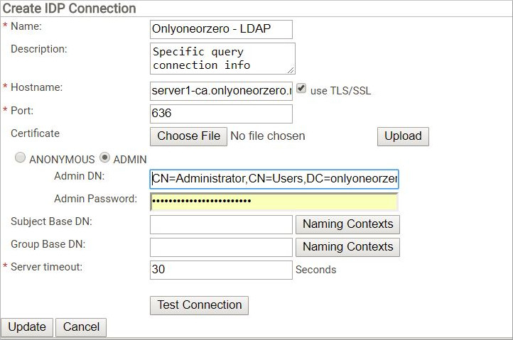
- To confirm the Active Directory settings, click Test Connection.
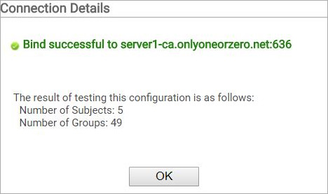
- Click OK. Click Update to return to the Identity Provider settings.
Configure the SecureW2 Network Profile for the HTTPS Proxy Decryption Certificate
- From the SecureW2 JoinNow MultiOS Management Portal, select Device Onboarding > Network Profiles.
- Click Edit for the new profile. The existing certificate is for encryption of wireless client traffic through EAP-TLS.
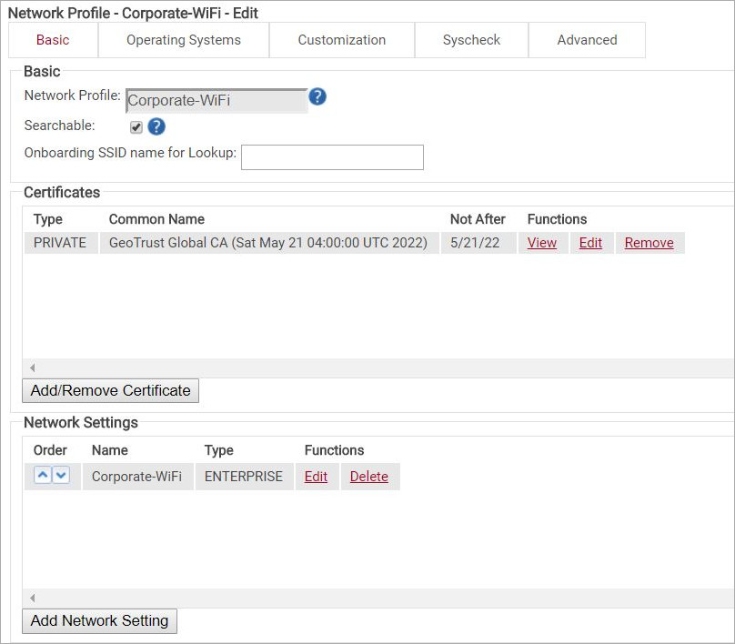
- Click Add/Remove Certificate.
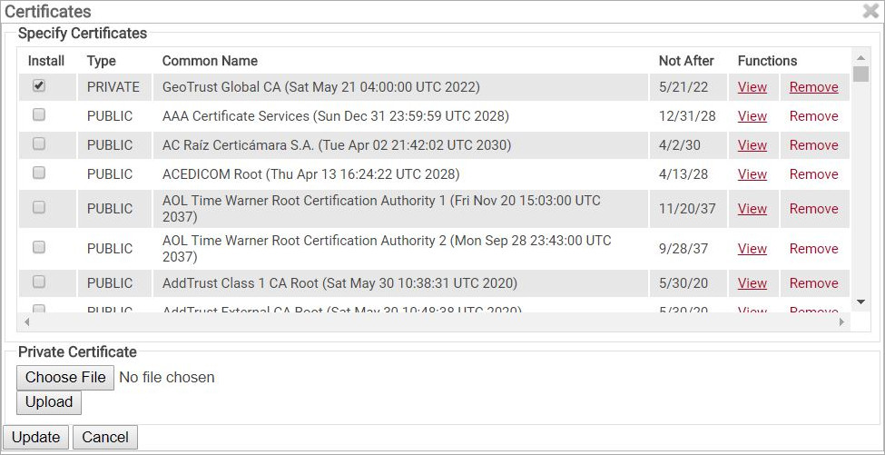
- Click Choose File and browse to the location of the HTTPS Proxy Certificate.
- Select the certificate file. Click Open.
- Clear any check marks present in the Install column.
- Click Upload. Click OK to confirm.
- Click Cancel. Re-open the Add/Remove Certificate page.
- Leave the Install check mark selected on the EAP-TLS certificate and find the uploaded HTTPS Proxy Certificate.
- Select the check mark for Installfor the private HTTPS Proxy Certificate.
- Click Update. The Certificates section should now contain both the ESP-TLS Certificate and the HTTPS Proxy Certificate.
- Return to the Device Onboarding > Network Profiles page.
- In the configured Network Profile, click Publish/Re-publish.
- Repeat the Publish/Re-publish action for the new Network Profile Group.
Configure the SecureW2 Authentication Policy
The SecureW2 Authentication Policy defines the protocols that the JoinNow MultiOS uses to communicate with the devices and assigns the Identity Provider.
- From the SecureW2 JoinNow MultiOS Management Portal, select Policy Management > Authentication.
- Click Edit on the auto-created Authentication Policy.
- Select the Settings tab.
- From the Identity Provider drop-down list, select the Identity Provider you created.
- Click Update.
Configure the SecureW2 User Role Policy
- From the SecureW2 JoinNow MultiOS Management Portal select Policy Management > User Roles.
- Click Edit on the Default Role Policy.
- Select the Conditions tab.
- From the Identity Provider drop-down list, select the configured provider.
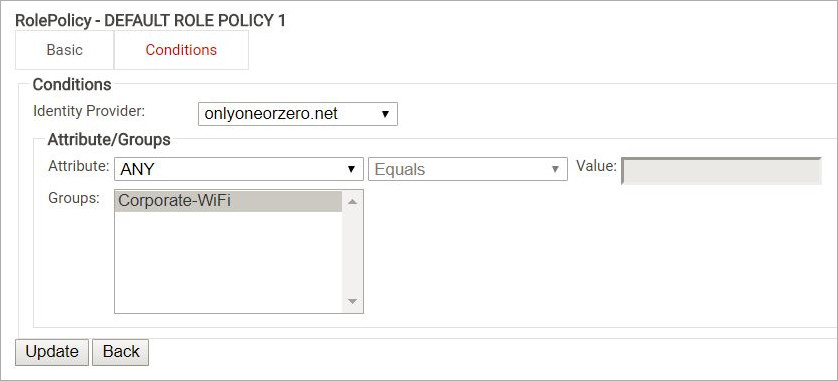
- Click Update.
Configure the SecureW2 Enrollment Policy
- From the SecureW2 JoinNow MultiOS Management Portal, select Policy Management > Enrollment.
- Select Edit on the Default Enrollment Policy.
- On the Conditions tab, from the User Role and Device Role drop-down list, select the default policies.
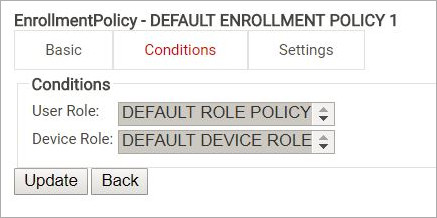
- Click Update.
Test a Wireless Client
- Connect to the On-Boarding Wi-Fi SSID.
- The client will be redirected to the JoinNow configured view URL.
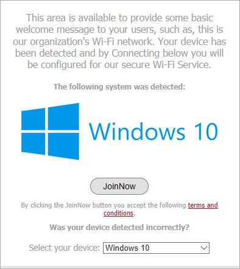
- Click JoinNow.
- From the download dialog box, click Run.
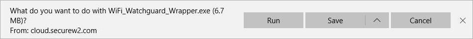
- Type the Username and Password. Click Next.
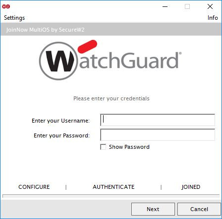
The user is automatically redirected to the EAP-TLS wireless connection.